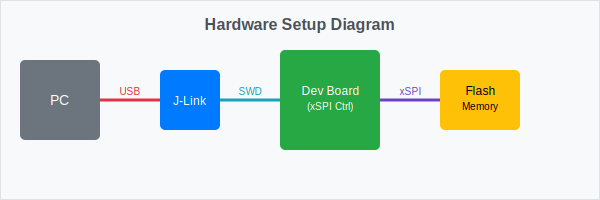
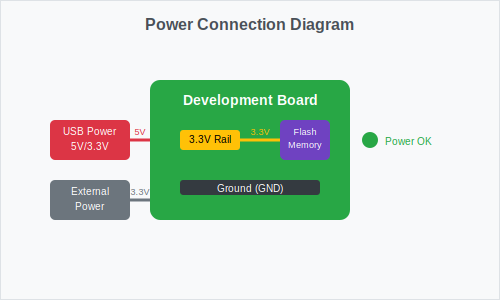
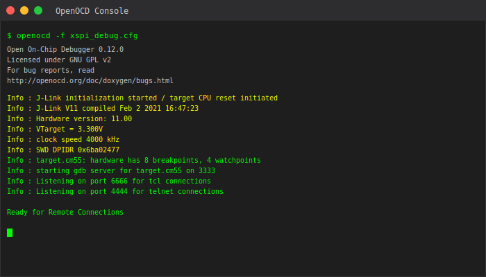
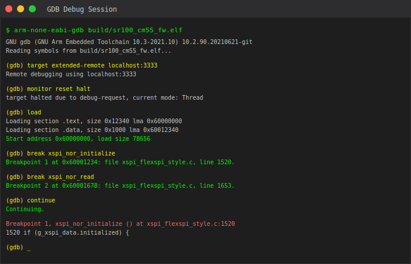
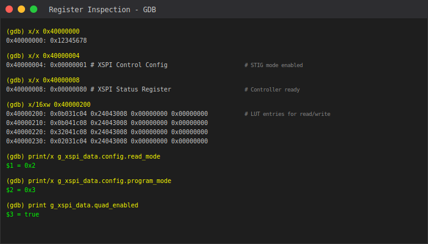
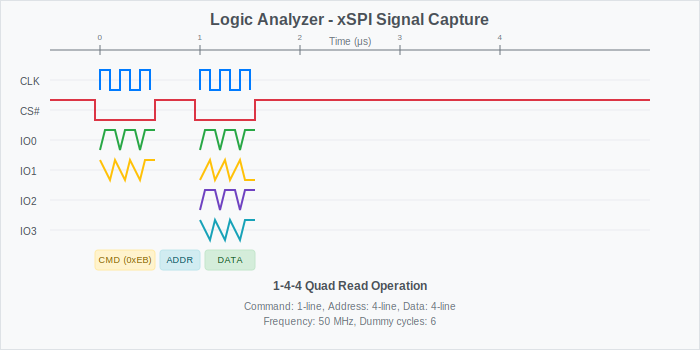

OpenOCD Debug Guide for xSPI Flash Driver
This guide provides step-by-step instructions for debugging the xSPI flash driver using OpenOCD and GDB.
Table of Contents
Prerequisites
Software Requirements
OpenOCD 0.12.0 or later
ARM GDB (arm-none-eabi-gdb)
J-Link drivers (if using J-Link debugger)
SDK build environment
Hardware Requirements
Development board with xSPI controller
J-Link or compatible JTAG/SWD debugger
USB cables for power and debug connection
xSPI flash memory device (Winbond, Macronix, GigaDevice, etc.)

Hardware Setup
1. Board Connections
Connect your hardware as shown in the diagram:
[PC] ←USB→ [J-Link] ←SWD→ [Dev Board] ←xSPI→ [Flash Memory]
2. Power Configuration
Ensure proper power supply to the development board:
Connect USB power or external power supply
Verify 3.3V rail is stable
Check that flash memory is properly powered

3. SWD/JTAG Connection
Connect the debugger to the development board SWD interface:
J-Link Pin |
Board Pin |
Signal |
|---|---|---|
1 |
VCC |
3.3V |
7 |
SWDIO |
SWDIO |
9 |
SWCLK |
SWCLK |
15 |
nRESET |
RESET |
4,6,8,10,12,14,16,18,20 |
GND |
Ground |
OpenOCD Configuration
1. Create OpenOCD Configuration File
Create xspi_debug.cfg in your project directory:
# xSPI Debug Configuration
source [find interface/jlink.cfg]
# Set adapter speed
adapter speed 4000
# Target configuration
source [find target/cortex_m.cfg]
# Target specific settings
set CHIPNAME target
set CPUTAPID 0x6ba02477
# CM55 Core configuration
target create $_CHIPNAME.cm55 cortex_m -endian little -chain-position $_CHIPNAME.cpu
# Flash configuration for xSPI
flash bank xspi_flash external 0x60000000 0x1000000 1 1 $_CHIPNAME.cm55
# Reset configuration
reset_config srst_only srst_nogate
# Initialize
init
# Enable semihosting
arm semihosting enable
# Halt after reset
reset halt
2. Launch OpenOCD
openocd -f xspi_debug.cfg
Expected output:
Open On-Chip Debugger 0.12.0
Licensed under GNU GPL v2
Info : J-Link initialization started / target CPU reset initiated
Info : J-Link V11 compiled Feb 2 2021 16:47:23
Info : Hardware version: 11.00
Info : VTarget = 3.300V
Info : clock speed 4000 kHz
Info : SWD DPIDR 0x6ba02477
Info : target.cm55: hardware has 8 breakpoints, 4 watchpoints
Info : starting gdb server for target.cm55 on 3333

Debugging Session
1. Connect GDB
In a separate terminal, launch GDB:
arm-none-eabi-gdb build/sr100_cm55_fw.elf
Connect to OpenOCD:
(gdb) target extended-remote localhost:3333
(gdb) monitor reset halt
(gdb) load
(gdb) monitor reset halt
2. Set Breakpoints
Set breakpoints in xSPI driver functions:
# Break at driver initialization
(gdb) break xspi_nor_initialize
# Break at read/write operations
(gdb) break xspi_nor_read
(gdb) break xspi_nor_write
# Break at SFDP detection
(gdb) break xspi_configure_from_sfdp
# Break at quad mode enable
(gdb) break xspi_enable_quad_mode
3. Start Debugging
(gdb) continue

Common Debug Scenarios
1. Flash Detection Issues
If flash is not detected properly:
# Check JEDEC ID reading
(gdb) break xspi_read_jedec_id
(gdb) continue
(gdb) print/x jedec_id[0]
(gdb) print/x jedec_id[1]
(gdb) print/x jedec_id[2]
2. SFDP Parameter Issues
Debug SFDP parameter reading:
# Break at SFDP header reading
(gdb) break jesd216_sfdp_read
(gdb) continue
# Examine SFDP data
(gdb) x/16xw sfdp_header
(gdb) x/64xw bfp_table
3. Quad Mode Enable Problems
Debug quad mode configuration:
# Check QER detection
(gdb) break xspi_read_qer_from_sfdp
(gdb) continue
(gdb) print qer_type
# Check status register operations
(gdb) break xspi_read_status
(gdb) continue
(gdb) print/x status_value
4. xSPI Controller Register Inspection
Examine xSPI controller registers during operation:
# Check controller configuration
(gdb) x/x 0x40000000 # XSPI_CTRL_BASE_ADDRESS
(gdb) x/x 0x40000004 # Control config register
(gdb) x/x 0x40000008 # Status register
# Check LUT entries
(gdb) x/16xw 0x40000200 # LUT table base

5. Memory Operations Debug
Debug read/write operations:
# Set watchpoint on data buffer
(gdb) watch *((char*)data_buffer)
# Check XIP memory space
(gdb) x/64xw 0x60000000 # XIP base address
# Monitor flash operations
(gdb) break xspi_nor_write_page_stig
(gdb) continue
(gdb) print/x address
(gdb) print length
(gdb) x/16xb data
Troubleshooting
Common Issues and Solutions
1. Connection Problems
Issue: OpenOCD cannot connect to target
Error: SWD DPIDR 0x00000000
Error: Could not initialize the debug port
Solution:
Check SWD connections
Verify target power
Reduce adapter speed:
adapter speed 1000Try different reset configuration
2. Flash Access Errors
Issue: Cannot read/write flash memory
Error: Failed to read flash status
Error: Flash operation timeout
Solution:
Verify flash power supply
Check xSPI controller initialization
Ensure correct flash device configuration
Verify LUT table programming
3. SFDP Reading Failures
Issue: SFDP parameters cannot be read
SFDP header read failed
Invalid SFDP signature
Solution:
Check flash device compatibility
Verify SFDP read command (0x5A)
Ensure proper dummy cycles
Try different read modes (1-1-1 first)
4. Quad Mode Issues
Issue: Quad mode enable fails
QE bit not set after write
Quad read operations fail
Solution:
Verify QER type detection
Check manufacturer-specific QE procedures
Ensure proper write enable sequence
Verify status register write operations
Debug Commands Reference
GDB Command |
Description |
|---|---|
|
Show CPU registers |
|
Show call stack |
|
Print variable value |
|
Examine memory |
|
Set watchpoint |
|
Reset target via OpenOCD |
|
Halt target execution |
OpenOCD Monitor Commands
Command |
Description |
|---|---|
|
Reset and halt target |
|
Show registers |
|
Show flash bank info |
|
Read word from memory |
|
Write word to memory |
Advanced Debugging Techniques
1. Logic Analyzer Integration
For complex timing issues, use a logic analyzer to capture SPI signals:
Channels to monitor:
- CLK: xSPI clock
- CS#: Chip select
- IO0-IO3: Data lines (quad mode)
- IO4-IO7: Additional data lines (octal mode)

2. Performance Profiling
Profile flash operations:
# Time flash operations
(gdb) set $start = $pc
(gdb) continue
(gdb) set $end = $pc
(gdb) print $end - $start
3. Automated Test Scripts
Create GDB scripts for automated testing:
# test_flash.gdb
define test_flash_read
break xspi_nor_read
continue
print "Read operation started"
continue
print "Read operation completed"
end
define test_flash_write
break xspi_nor_write
continue
print "Write operation started"
continue
print "Write operation completed"
end
Conclusion
This guide provides comprehensive debugging support for the Sabre xSPI flash driver. Use the appropriate debugging techniques based on your specific issue:
Connection issues: Start with basic OpenOCD connection
Flash detection: Debug JEDEC ID and SFDP reading
Mode configuration: Focus on quad/octal mode enable sequences
Data operations: Monitor read/write operations and memory access
Performance issues: Use profiling and logic analyzer capture
For additional support, refer to the driver source code comments and the xSPI controller documentation.
Note: Replace placeholder images in the _static/assets/ directory with actual screenshots and diagrams from your debugging setup.